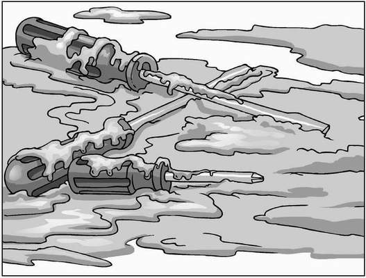
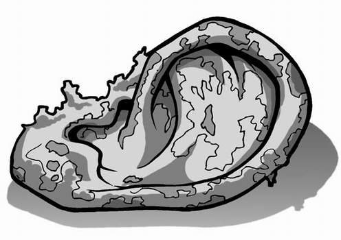

‘He’s down there,’ said James as he, Lenny and Alexander listened at the door that led down to the cellar. The sound of an electric drill, and the strains of Elvis singing via a CD player could be heard faintly.
‘What do we do now?’ asked Lenny.
James shrugged. ‘We’ll have to try again tomorrow, if Mr Wharpley’s not down there again, of course.’
Alexander shook his head. ‘The ghosts could be on to us by then,’ he said. ‘In fact, they could be listening to what we’re saying right now.’
Lenny looked up and down the corridor, nervously. ‘Right now?’ he asked.
‘Of course,’ replied Alexander. ‘As spectral entities, they’ll be more than adept at assuming translucence. The probability of an ectoplasmic encounter is extreme.’
‘I wish you’d talk properly,’ grumbled Lenny.
‘He means that they can probably make themselves invisible,’ said James. ‘And they could be standing beside us at the moment.’
Lenny gingerly stretched out an arm and swept it back and forth through the air. ‘You’ve just sliced some poor dead person’s head off,’ said Alexander, causing Lenny to wipe his hand repeatedly on his jumper.
‘Stop winding him up!’ ordered James. ‘We have to get Whiskers into the sewers today. But how are we going to get down to that manhole cover if Wharpley’s hanging around?’
‘Simple,’ replied Alexander. ‘We enlist the help of the girls again.’
James turned to see Leandra and Stacey striding along the corridor.
‘A spinning Lenny?’ demanded Leandra as she arrived. Lenny blushed. Word certainly travelled fast around here. ‘Do you know how much damage having a loony for a brother could do to my reputation?’
‘Never mind that now,’ interrupted Alexander. ‘We have bigger fish to fry.’ He smiled, wickedly. ‘Or should that be lumpier soup to throw?’
Five minutes later, Stacey Carmichael was carefully pouring a bucket of vegetable soup over the floor of the hall, holding it at arm’s length to try and avoid splashing her perfect
white trainers that she wore in place of her ruined ballet pumps. She wasn’t going to lose another pair of shoes. The soup slopped noisily on to the wooden floor.
James had started to ask why Alexander had a spare key to the kitchens but, with the end of break just minutes away, he figured it could wait until later.
‘Mr Wharpley!’ screamed Leandra in as girly a voice as she could manage. ‘It’s sooo gross! Someone’s just thrown up!’
James, Lenny and Alexander listened from inside the boys’ toilets as the caretaker came thudding up the stairs clanking a bucket of sand. ‘Lead the way,’ he grunted, as Leandra set off on the longest route possible to the hall.
James signalled the all clear, and the three boys slipped out and back down to the cellar.
Elvis crooned on as James, Lenny and Alexander crept into Mr Wharpley’s room as silently as they could manage.
‘Over there,’ whispered Alexander, pointing to the area behind a pile of broken desks. The rusted metal shelving unit had gone, and the tools were now piled into cardboard boxes around the room. James slid one of them across the floor to reveal a manhole cover, caked in dirt and black gunge.
‘This should lead directly into the sewers if I’m following the old blueprint correctly,’ said Alexander. ‘All we have to do is lift it up and slip Whiskers down there to work his magic.’
‘SQUEAK!’ uttered Whiskers from deep inside Lenny’s bag, as though accepting the mission.
James pushed his fingers into the foul-smelling goop that surrounded the manhole cover, and pulled as hard as he could, but it didn’t budge. ‘It’s stuck!’ he said.
‘It’s probably all this gunk around the edges,’ explained Alexander. ‘We’ll need to shift it to have any chance of opening the manhole.’
Lenny checked his watch. ‘There’s only a couple of minutes left of break.’
‘Then we’ll remove what we can,’ said James, ‘and come back at lunchtime to send Whiskers down there.’ He reached into a nearby cardboard box and pulled out three screwdrivers. Taking one each, Alexander and Lenny began to dig and scrape at the decades of mud and oil that held the manhole cover in place. James sighed heavily, and joined in.
The boys dug as hard and as fast as they could, spraying the goo all over themselves and the room. ‘This stuff stinks,’ muttered Lenny as another chunk of the gunk splattered on to his trousers.
‘And little wonder,’ said Alexander, pausing to wipe his sweating forehead. ‘It will have been building up for years. In fact, I wouldn’t be surprised if some of this material has oozed up from below the school and contains the original plague virus.’
Lenny and James dropped their screwdrivers with a clatter and scuttled away from the manhole. ‘What’s the matter?’ asked Alexander, looking up.
‘What’s the matter?’ shouted James. ‘We’ve been digging up the Black Death for the past five minutes, and you want to know what’s the matter?’
Alexander shook his head. ‘The plague virus has been dead in Europe for about two hundred years!’ he explained, smirking at the success of his joke. ‘This stuff might stink, but it’s completely harmless.’ With that, he yanked his screwdriver

out of the mess and a lump of the muck flew up, hitting him squarely in the eye.
‘Argh!‘ he squealed, throwing down his screwdriver and rubbing furiously at his face. James and Lenny shared a wry smile then got back to work, scraping away at the filthy goo once more.
Suddenly, everything went wrong.
‘My tools!’ thundered a voice. The boys looked up to see Mr Wharpley, at this moment the world’s angriest school caretaker, standing over them. ‘What are you doing with my tools?’
Alexander leapt to his feet. ‘Mr Wharpley,’ he began. ‘It’s not what it looks like. We’ve been asked to collect a sample of mud for our science lesson.’
‘And you’re using my best screwdrivers to do it?’ roared the caretaker, snatching the tool from Alexander’s hand and wiping it clean on his trouser leg. ‘They were a present from my wife!’
James swallowed hard. If they could just calm Mr Wharpley down, they might get away with this. So long as no one said anything stupid.
‘Well, she obviously hangs out with builders a lot, because she definitely knows her tools!’ announced Alexander.
James hung his head, resigned to the punishment that was to come.
Just about everyone laughed as Mr Wharpley marched James, Lenny and Alexander through the school towards the headmaster’s office. Talk of their plan had obviously spread too, as a group of year-nine boys began to sing the theme from Ghostbusters as they watched them go by. ‘Who you gonna call?’ shouted one of them.
Only Stacey and Leandra, who had witnessed the horrific events in the girls’ toilets with them, stood silently as the three condemned pupils, covered in dirt and mud from the cellar, were paraded along the corridor.
James caught Stacey’s eye; the girl of his dreams seemed to be pitying him. But not ‘I feel sorry for you’ pity. More like ‘you sad little boy’ pity.
James sighed and dragged his gaze away from her. Things surely couldn’t get any worse.
